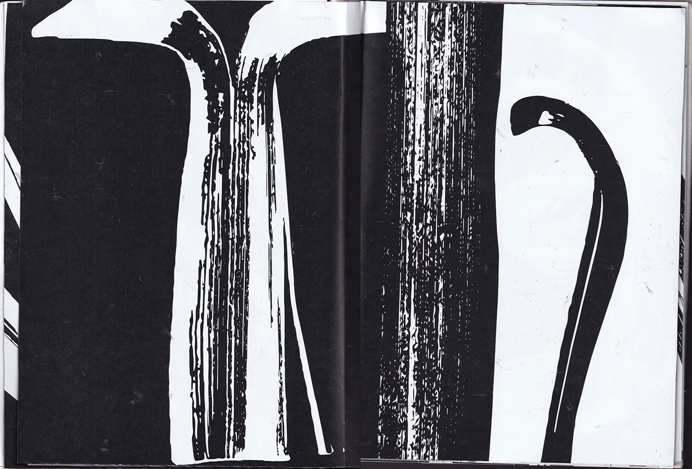
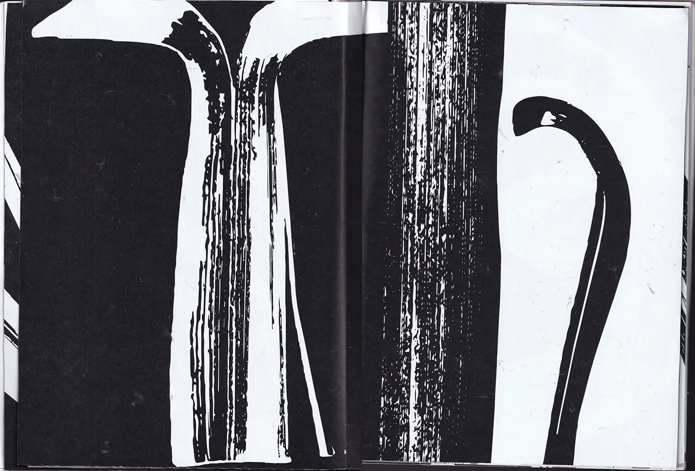

Clara Robson | playful yet powerful design
book re-design
 

Take a look through my re-creation of The New Art of Making Books by Ulises Carrion! I based the imagery for the book around my experimentation with the book’s form, which is a main theme of the text. Using a scanner to capture my pushing, twisting and pulling of a book, I created an alphabet of letter forms. I split the pages into two sections, rearranging the text that describes ‘old art’, and ‘new art’.
The new object celebrates the form of the book in both its delicate pages, and its imagery taken from my experimentation. I explored duality and juxtaposition throughout, the stark black and white palette inspired by this.